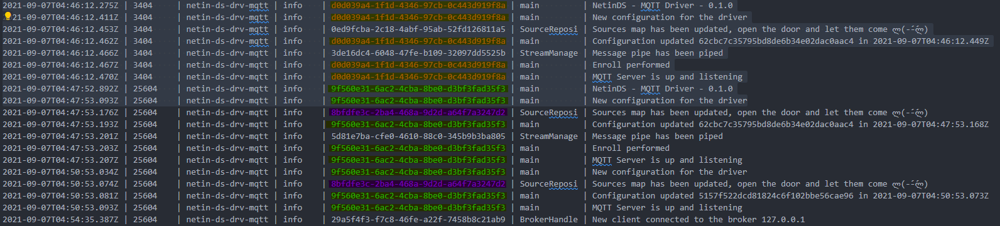

Module @mdf.js/logger
@mdf.js/logger


@mdf.js/logger
Improved logger management for @mdf.js framework
Table of contents
- @mdf.js/logger
Introduction
@mdf.js/logger is a powerful and flexible logging module designed for the @mdf.js framework. It provides enhanced logging capabilities with support for multiple logging levels and transports, including console, file, and Fluentd. This module allows developers to easily integrate robust logging into their applications, enabling better debugging, monitoring, and error tracking.

Installation
Install the @mdf.js/logger module via npm:
- npm
npm install @mdf.js/logger
- yarn
yarn add @mdf.js/logger
Information
Features
- Multiple Log Levels: Supports standard log levels (
silly,debug,verbose,info,warn,error) for granular control over logging output. - Customizable Transports: Supports logging to console, files, and Fluentd.
- Flexible Configuration: Easily configure logging options to suit your application's needs.
- Contextual Logging: Support for context and unique identifiers (UUID) to trace logs across different parts of your application.
- Error Handling: Ability to log errors and crashes with detailed stack traces and metadata.
- Integration with @mdf.js Framework: Seamless integration with other
@mdf.jsmodules.
Usage
Creating a Logger Instance
To use @mdf.js/logger in your project, import the module and create a new logger instance:
import { Logger } from '@mdf.js/logger';
const logger = new Logger('my-app');
This creates a new logger with default settings for your application labeled 'my-app'.
Logging Methods and Signatures
The logger instance provides methods for logging at different levels:
silly(message: string, uuid?: string, context?: string, ...meta: any[]): void;debug(message: string, uuid?: string, context?: string, ...meta: any[]): void;verbose(message: string, uuid?: string, context?: string, ...meta: any[]): void;info(message: string, uuid?: string, context?: string, ...meta: any[]): void;warn(message: string, uuid?: string, context?: string, ...meta: any[]): void;error(message: string, uuid?: string, context?: string, ...meta: any[]): void;crash(error: Crash | Boom | Multi, context?: string): void;
Function Parameters
- message: A human-readable string message to log.
- uuid (optional): A unique identifier (UUID) for tracing the log message across different components or requests.
- context (optional): The context (e.g., class or function name) where the logger is logging.
- ...meta (optional): Additional metadata or objects to include in the log.
Examples
Logging an info message without UUID and context:
logger.info('Application started');
Logging an error message with UUID and context:
const uuid = '02ef7b85-b88e-4134-b611-4056820cd689';
const context = 'UserService';
logger.error('User not found', uuid, context, { userId: 'user123' });
Contextual Logging
To simplify logging with a fixed context and UUID, you can create a wrapped logger using the SetContext function:
import { SetContext } from '@mdf.js/logger';
const wrappedLogger = SetContext(logger, 'AuthService', '123e4567-e89b-12d3-a456-426614174000');
wrappedLogger.info('User login successful', undefined, undefined, { userId: 'user123' });
In this case, the uuid and context parameters are pre-set, and you can omit them in subsequent log calls.
Logging Errors and Crashes
To log errors or crashes with detailed stack traces and metadata, use the crash method:
import { Crash } from '@mdf.js/crash';
try {
// Code that may throw an error
} catch (error) {
const crashError = Crash.from(error);
logger.crash(crashError, 'AuthService');
}
The crash method logs the error at the error level, including the stack trace and additional information.
Configuring the Logger
You can customize the logger by passing a configuration object:
import { Logger, LoggerConfig } from '@mdf.js/logger';
const config: LoggerConfig = {
console: {
enabled: true,
level: 'debug',
},
file: {
enabled: true,
filename: 'logs/my-app.log',
level: 'info',
maxFiles: 5,
maxsize: 10485760, // 10 MB
zippedArchive: true,
},
fluentd: {
enabled: false,
// Additional Fluentd configurations for fluent-logger module
},
};
const logger = new Logger('my-app', config);
### **Using DebugLogger**
If you prefer using the `debug` module, utilize the `DebugLogger` class:
```typescript
import { DebugLogger } from '@mdf.js/logger';
const debugLogger = new DebugLogger('my-app');
debugLogger.debug('This is a debug message using DebugLogger');
Logger Configuration Interface
The LoggerConfig interface allows you to configure different transports:
interface LoggerConfig {
console?: ConsoleTransportConfig;
file?: FileTransportConfig;
fluentd?: FluentdTransportConfig;
}
Console Transport Configuration
interface ConsoleTransportConfig {
enabled?: boolean; // Default: false
level?: LogLevel; // Default: 'info'
}
File Transport Configuration
interface FileTransportConfig {
enabled?: boolean; // Default: false
level?: LogLevel; // Default: 'info'
filename?: string; // Default: 'logs/mdf-app.log'
maxFiles?: number; // Default: 10
maxsize?: number; // Default: 10485760 (10 MB)
zippedArchive?: boolean; // Default: false
json?: boolean; // Default: false
}
Fluentd Transport Configuration
type FluentdTransportConfig = {
enabled?: boolean; // Default: false
level?: LogLevel; // Default: 'info'
// Additional Fluentd-specific options here
};
Log Levels
Available log levels are defined by the LogLevel type:
type LogLevel = 'error' | 'warn' | 'info' | 'verbose' | 'debug' | 'silly';
Error Handling in Configuration
The logger handles configuration errors gracefully. If there's an error in the provided configuration, the logger defaults to predefined settings and logs the configuration error:
const invalidConfig: LoggerConfig = {
console: {
enabled: true,
level: 'invalid-level' as LogLevel, // This will cause a validation error
},
};
const logger = new Logger('my-app', invalidConfig);
// The logger will use default settings and log the configuration error
Checking Logger State
You can check if the logger has encountered any configuration errors:
if (logger.hasError) {
console.error('Logger configuration error:', logger.configError);
}
License
Copyright 2024 Mytra Control S.L. All rights reserved.
Use of this source code is governed by an MIT-style license that can be found in the LICENSE file or at https://opensource.org/licenses/MIT.